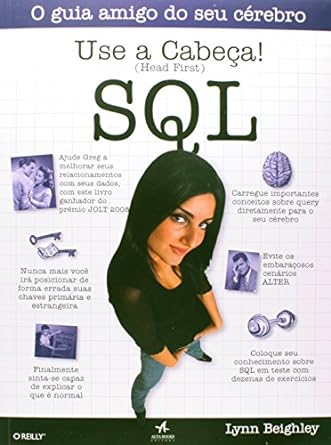

Use a Cabeça: SQL

Autor: Lynn Beighley
Catergoria: Linguagem de Programação
Ano: 2008
Resumo: O que você irá aprender com este livro?No mundo de hoje, dados é poder, mas o verdadeiro segredo do sucesso é ter poder sobre seus dados. Use a Cabeça SQL leva você ao coração da linguagem SQL, da sintaxe básica das queries, usando INSERT e SELECT, à dureza da manipulação do banco de dados com subqueries, joins e transactions. A medida que você avança na leitura, entenderá efetiva e efi cientemente o projeto e a criação de banco de dados, utilizando queries, normatização e joining. Você será então o verdadeiro mestre dos seus dados!Por que este livro parece tão diferente?Nós acreditamos que seu tempo é muito valioso para ser desperdiçado. Tendo como base a última pesquisa em neurobiologia, ciência cognitiva e teoria do aprendizado, Use a Cabeça SQL tem um visual rico, projetado na forma como seu cérebro funciona; não se trata de uma abordagem pesada que faz com que você caia em sono profundo.“Este livro não torna o SQL mais fácil, mas o torna desafiador, interessante e divertido. Isso até responde à pergunta ‘Como ensinar queries não relacionadas sem perder a vontade de viver?’ Esta é a formacorreta de aprender – é fácil, é vibrante e tem uma aparência incrível.”― Andrew Cumming, Autor de SQL Hacks, sqlzoo.net“Existem aqueles livros que você compra, livros que você guarda, livros que você deixa na sua mesa, e graças à equipe do Use a Cabeça, há uma última categoria, os livros da série Use a Cabeça. São aqueles livros com as páginas cheias de orelhas, usados e carregados para todos os lados. Use a Cabeça SQL está no topo da minha pilha”.― Bill Sawyer, Gerente de currículos, Oracle.